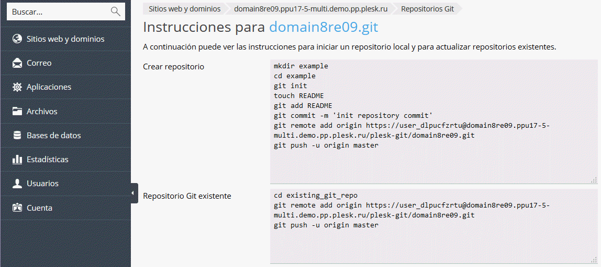

GIT: Es un software de control de versiones diseñado por Linus Torvalds, pensando en la eficiencia y la confiabilidad del mantenimiento de versiones de aplicaciones cuando éstas tienen un gran número de archivos de código fuente. Al principio, Git se pensó como un motor de bajo nivel sobre el cual otros pudieran escribir la interfaz de usuario o front end como Cogito o StGIT. 3 Sin embargo, Git se ha convertido desde entonces en un sistema de control de versiones con funcionalidad plena. 4 Hay algunos proyectos de mucha relevancia que ya usan Git, en particular, el grupo de programación del núcleo Linux.
Caracteristicas de GIT:
El diseño de Git resulta de la experiencia del diseñador de Linux, Linus Torvalds, manteniendo una enorme cantidad de código distribuida y gestionada por mucha gente, que incide en numerosos detalles de rendimiento, y de la necesidad de rapidez en una primera implementación.
Entre las características más relevantes se encuentran:
- Fuerte apoyo al desarrollo no lineal, por ende rapidez en la gestión de ramas y mezclado de diferentes versiones. Git incluye herramientas específicas para navegar y visualizar un historial de desarrollo no lineal. Una presunción fundamental en Git es que un cambio será fusionado mucho más frecuentemente de lo que se escribe originalmente, conforme se pasa entre varios programadores que lo revisan.
- Gestión distribuida. Al igual que Darcs, BitKeeper, Mercurial, SVK, Bazaar y Monotone, Git le da a cada programador una copia local del historial del desarrollo entero, y los cambios se propagan entre los repositorios locales. Los cambios se importan como ramas adicionales y pueden ser fusionados en la misma manera que se hace con la rama local.
- Los almacenes de información pueden publicarse por HTTP, FTP, rsync o mediante un protocolo nativo, ya sea a través de una conexión TCP/IP simple o a través de cifrado SSH. Git también puede emular servidores CVS, lo que habilita el uso de clientes CVS pre-existentes y módulos IDE para CVS pre-existentes en el acceso de repositorios Git.
- Los repositorios Subversion y svk se pueden usar directamente con git-svn.
- Gestión eficiente de proyectos grandes, dada la rapidez de gestión de diferencias entre archivos, entre otras mejoras de optimización de velocidad de ejecución.
- Todas las versiones previas a un cambio determinado, implican la notificación de un cambio posterior en cualquiera de ellas a ese cambio (denominado autenticación criptográfica de historial). Esto existía en Monotone.
- Resulta algo más caro trabajar con ficheros concretos frente a proyectos, eso diferencia el trabajo frente a CVS, que trabaja con base en cambios de fichero, pero mejora el trabajo con afectaciones de código que concurren en operaciones similares en varios archivos.
- Los renombrados se trabajan basándose en similitudes entre ficheros, aparte de nombres de ficheros, pero no se hacen marcas explícitas de cambios de nombre con base en supuestos nombres únicos de nodos de sistema de ficheros, lo que evita posibles, y posiblemente desastrosas, coincidencias de ficheros diferentes en un único nombre.
- Realmacenamiento periódico en paquetes (ficheros). Esto es relativamente eficiente para escritura de cambios y relativamente ineficiente para lectura si el reempaquetado (con base en diferencias) no ocurre cada cierto tiempo.
Git. (2017, 25 de marzo). Wikipedia, La enciclopedia libre. Fecha de consulta: 18:59, abril 15, 2017 desde https://es.wikipedia.org/w/index.php?title=Git&oldid=97838193
|


Tower versión control. (2016, 26 de abril) tomada de: https://www.git-tower.com/learn/git/ebook/en/command-line/remote-repositories/introduction |